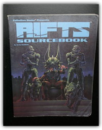
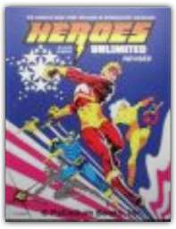
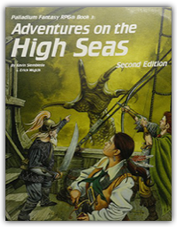
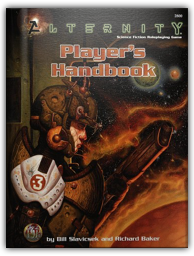
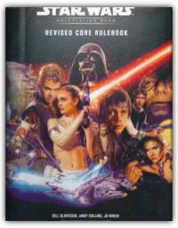
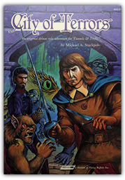
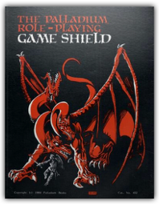
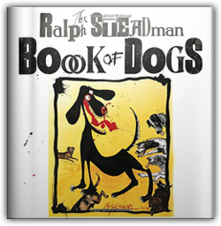
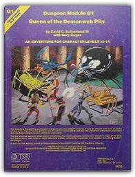
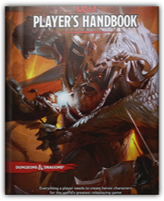

|

Rifts Sourcebook 1
Kevin Siembieda

The Rifts Sourcebook One gives the reader more of everything! More data on the Coalition States, CS combat squads, CS morality, character stats, monsters, robots, weapons, equipment and adventures! Plus a peek at the super technology and weapons of the New German Republic along with some Northern Gun bots and weapons.

Heroes Unlimited
Kevin Siembieda
There has never been a single superhero RPG book, like Heroes Unlimited, that enables players to create virtually every type of hero imaginable ... Mutants, superhumans, alien visitors, super-sleuths, weapon masters, cyborgs, robots, psychics, masters of the mystic arts, super-soldiers, genius inventors, and even crazy heroes.

Adventures on the High Seas
Kevin Siembieda, Alex Marcinsizyn
Numerous adventures on the high seas and oceans of the Palladium world take you to an uncharted island in the Sea of Despair to the noble walls of the Bizantium Kingdom, the isles of Y-Oda and Zy, then south to the pirate and serpent infested waters of the Floenry Isles (all 14 islands are described), and finally west to the seldom visited Island of the Cyclops and its four sisters islands. A truly comprehensive addition to the Palladium RPG fantasy system.

Alternity Player's Handbook
Bill Slavicsek, Richard Baker
You're an explorer commanding the newest starship in the fleet, or... a brilliant scientist seeking a cure for a deadly alien virus, or... a battle-weary space marine fighting to protect the galaxy, or... any other SF hero you can imagine!

Revised Core Rulebook
Bill Slavicsek, Andy Collins, J.D. Wiker, Steve Sansweet
Revised and updated with new information from Star Wars: Attack of the Clones, including game statistics, characters, creatures, and vehicles.
Dr. Spock's Baby and Child Care: 8th Edition
Benjamin Spock, Robert Needlman
OVER 50 MILLION COPIES IN PRINT! THE CLASSIC THAT CONTINUES TO GROW WITH THE TIMES! For sixty-five years, parents have relied on the expert advice of renowned pediatrician Dr. Benjamin Spock. But while children never change, issues and concerns do. Dr. Robert Needlman, himself a top-notch pediatrician, has newly updated and expanded this timeless classic to speak to any parent who is raising children in our rapidly changing world. While still providing reassuring advice on age-old topics such as caring for a new baby, as well as accidents, illness, and injuries, this book also contains expanded information in many new areas, including: - Cutting-edge medical opinion on immunizations - Obesity and nutrition - Cultural diversity and nontraditional family structures - Children's learning and brain development - The newest thinking on children with special needs - Environmental health - Increasingly common disorders such as ADHD, depression, and autism— including medications and behavioral interventions - Children and the media, including electronic games - Coping with family stress - And much, much more With an updated glossary of common medications and an authoritative list of the most reliable online resources, this invaluable guide is still the next best thing to Dr. Spock's #1 rule of parenting: "Trust yourself. You know more than you think you do."

City of Terrors: The Original Solitaire Adventure for Tunnels & Trolls
Michael A. Stackpole
The city of Gull is renowned for its prominence on the ocean trading routes, for the talents of its resident thieves, but most of all for the interesting variety of people who live on the tropical isle of Phoron.

Palladium Role Playing Game Shield
staff
3-panel referee's screen for the Palladium Fantasy RPG.

The Ralph Steadman Book of Dogs
Ralph Steadman
Ralph Steadman—artist of distinction, caricaturist of brilliance—is also a longtime dog lover. In his latest book, he shows us dogs on furniture, fashion dogs, wine dogs, fantastical crossbreeds, and even the insects that live on dogs. The Ralph Steadman Book of Dogs captures the fierce and furious, the whimsical and wistful, and everything in between, including:

Dungeon Module Q1: Queen of the Demonweb Pits
David Sutherland III, Gary Gygax
The first of a new series of other-planar adventures, this module includes several new monsters, maps of the Web and lair of Lolth, and notes on eight alternate worlds, suitable for expansion and addition to existing AD&D campaigns. 32 pages, plus 2 cover folders.

Player's Handbook
Wizards RPG Team
Everything a player needs to create heroic characters for the world’s greatest roleplaying game |
 Made with Delicious Library
Made with Delicious Library